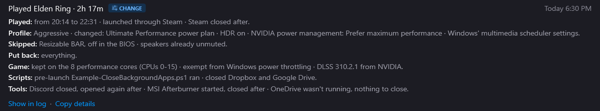
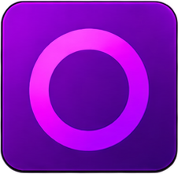
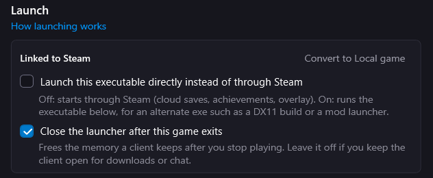
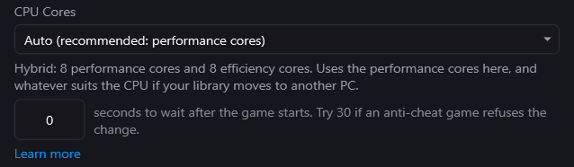
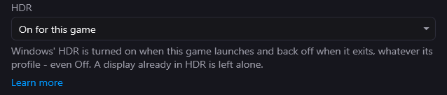
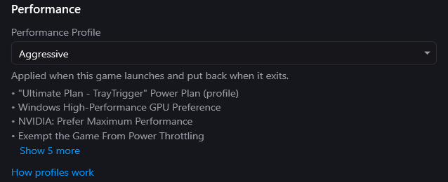
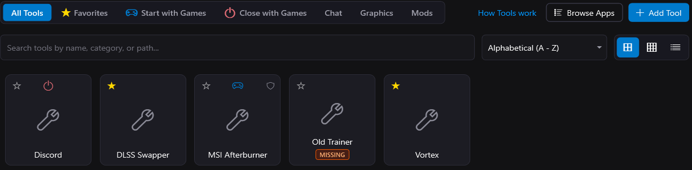
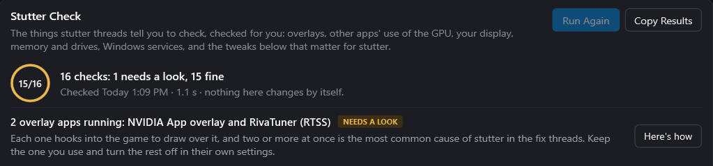

Find your reason
Start with the one thing you change by hand before every session.
Too many launchers
Seven stores in one tray menu. Launchers start minimized and close after the game.
Launchers →Ryzen X3D & Intel hybrid
Put a game on the 3D V-Cache cores or the P-cores, for that game only. No Process Lasso rules.
CPU cores →HDR & OLED
HDR on for the game that does it well, off for the one that doesn't. No more Win+Alt+B.
HDR per game →Sim racing & flight
SimHub, CrewChief or TrackIR start with the game and close when you're done.
Companion apps →Missing a feature?
Write it. Your own PowerShell runs before and after any game, and says what it did.
Your scripts →Chasing stutter
Stutter Check runs the usual checklist in one click, and every tweak shows its real state.
Stutter Check →One click starts it all
The launch is the trigger. Pick a game, and everything you chose for it happens around it.
Pick a game from the tray menu, the library or its own hotkey. It starts through its store's client, or directly.
TrayTrigger notes how Windows is set, then applies the game's profile: power plan, HDR, GPU preference, CPU cores, DLSS Override. Your tools close or start; your script runs.
TrayTrigger stays a tray icon. Suspend a game with Ctrl+Alt+P for a cutscene you can't pause, or close it from the tray.
When the game exits, every per-game setting goes back and is checked. Closed tools return, the launcher closes if you asked. After a crash, on the next start.
See exactly what a launch did
Each game's Played row in Activity & History lists what the profile changed, what it skipped and why, the cores the game ran on, what your script said it did, and the tools it closed and started. How Activity & History works →

Every store in one tray menu

- Seven stores, one scan. Steam, GOG, EA, Epic, Ubisoft Connect, Xbox / PC Game Pass and Battle.net games arrive with their real titles and art. Drop any exe or shortcut for the rest.
- A right-click, or Ctrl+Alt+T. Now Playing, Recent, Favorites and your categories in the tray menu; type a few letters and press Enter. Give any game its own launch hotkey.
- Clients out of the way. Games still start through their store, so cloud saves and achievements work, but Steam, GOG Galaxy and Epic start in the background, and any launcher can close after the game.

Each game gets its own setup
Chosen in the game's Edit Game window, applied when it launches, and reverted when it exits.
The right cores for each game
Games landing on the wrong CCD, or a Process Lasso rule for every exe?
Set CPU Cores per game: the 3D V-Cache cores on a Ryzen X3D, the performance cores on an Intel hybrid CPU, or Auto to let TrayTrigger pick for your CPU. It uses Windows CPU Sets, not a hard affinity mask, and the game's Played row says where it ran.

HDR on for this game, off when you quit
HDR left on after a game, and a washed-out desktop?
Set HDR On for the games that do it well and Off for the ones that render it badly, or let the profile decide. Windows' HDR switches when the game launches and switches back when it exits. A display already in HDR is left alone.

Power, GPU and DLSS, set per game
Optimized uses your high-performance power plan and GPU, keeps an NVIDIA GPU at full clocks and stops Windows throttling the game, with opt-in HDR, Do Not Disturb and a frame cap just under your refresh rate. Aggressive adds scheduling priority, timer resolution and more. Each profile lists exactly what it will change.
NVIDIA DLSS Override runs a game on your driver's newer DLSS files without touching the game folder.

Your apps start with the game, and close after
- Tools that start with your games. SimHub, CrewChief, TrackIR or Afterburner start when a game launches and close after the last one exits. One that was already running is left alone.
- Tools closed for your games. Discord, OneDrive or a browser close just before the game and open again after it, unless you opened it yourself in the meantime.
- On the record. The game's Played row lists which tools were closed, started, or left as they were.

Missing a feature? Write it.
If PowerShell can do it, TrayTrigger can do it around any game. Your script runs just before the game starts and again after it exits, with the game's name, exe and minutes played handed to it, and what it did shows up on that game's row in Activity & History.
- Start from a ready-made one. The TrayTrigger-Scripts catalogue switches your display's refresh rate for one game and back, changes an Afterburner profile, records with OBS, or backs up a save folder when you quit. Or press New script... in Edit Game for a template.
- One script, many games. Per-game Script Arguments hand each game its own values: a save folder, a profile number, a refresh rate.
- Tested before you trust it. Test Run shows exactly what the script saw and printed. Make the game wait for it, give it a timeout, or cancel the launch if it fails.
- In its own words. A line starting
TT:goes on the game's Played row and in the launch popup, so you see "saves backed up", not an exit code. - Yours, and in plain sight. Nothing runs until you attach a script. Scripts run as you, or as Administrator through Windows' own prompt when you choose it.
param($Phase, $GameName, $GameExe, $GameId, $Playtime,
[Parameter(ValueFromRemainingArguments)] $ScriptArgs)
# Back up this game's saves every time you quit.
# Script Arguments in Edit Game: the game's save folder.
if ($Phase -eq 'postexit') {
$name = $GameName -replace '[\\/:*?"<>|]', ''
$zip = "D:\SaveBackups\$name $(Get-Date -f yyyy-MM-dd_HHmm).zip"
New-Item -ItemType Directory -Force D:\SaveBackups | Out-Null
Compress-Archive -Path $ScriptArgs[0] -DestinationPath $zip
Write-Output "TT: saves backed up after $Playtime min"
}Find the stutter before you blame the game
Separate from per-game setup: these are system-wide, and stay until you undo them.
- Stutter Check. The checks every "my game stutters" thread asks for, in one click: overlays, a browser holding video memory, a monitor below its fastest refresh rate, memory below its rated speed, games on a hard drive, and more. It reports; it changes nothing by itself.
- Tweaks you can see and undo. Each row shows its real Windows state and what the setting does. Undo one, or use Undo Preset; bulk changes can create a System Restore point first.
- Hardware Specs. Live CPU, RAM and GPU load, VRAM, displays and drives, with warnings like a GPU running on fewer PCIe lanes than it supports.

What it changes, and what it doesn't
What goes back
Per-game settings go back when the game exits, and are checked. After a crash, on the next start.
System tweaks and whatever your scripts do stay until you undo them. Bulk changes can make a restore point first.
How it touches a game
CPU cores are set with Windows CPU Sets, not a hard affinity mask. Nothing is injected into a game and no driver is installed.
Suspend refuses games with a kernel anti-cheat. TrayTrigger runs as you; a few machine-wide tweaks ask for UAC.
Your privacy
No telemetry, no account. It goes online for game info and art, for update checks you can turn off, and for services you add your own key to.
MIT licensed. Read the source and SECURITY.md.
From download to play in three steps
Run the installer, or unzip the portable build anywhere. Windows 10/11, 64-bit; no .NET install needed.
Press Scan for Games in the library. Drop an exe or shortcut for anything it doesn't find.
Right-click the tray icon and pick a game. Leave its profile Off to just launch, and add a profile when you want one.
Free, no sign-up. Update checks are built in and can be turned off. All releases
FAQ
Can it get me banned?
TrayTrigger doesn't inject anything into a game or install a driver. It changes Windows settings around the game and sets its CPU cores and priority through the same Windows APIs Task Manager uses. Suspend, which pauses a game's process, refuses games with a kernel anti-cheat, because a game that stops answering its anti-cheat can be disconnected. No outside tool can promise what an anti-cheat will decide, so leave a competitive game's profile Off if you're unsure.
Does it need administrator access?
Not to run. A few tweaks write machine-wide settings and show a UAC prompt when you enable them. TrayTrigger never runs elevated by default.
Does it phone home?
No telemetry. Outbound calls are Steam's public API (metadata and artwork for games you add), SteamGridDB and RAWG (only if you enter your own key), NVIDIA's driver service (only when you press Check for Newer Driver on an NVIDIA GPU), and GitHub Releases (update checks, which you can turn off).
Is the download signed?
No. Releases are not code-signed, so Windows SmartScreen may warn the first time you run the installer. Releases are built by GitHub Actions from the public source and published with a SHA-256 checksum file. Verify a download with Get-FileHash in PowerShell and compare it to SHA256SUMS.txt on the release page, then choose More info and Run anyway. See the code signing section for details.
TrayTrigger doesn't do something I want. Now what?
If it's something to do before or after a game, a script can do it: TrayTrigger runs a PowerShell script of yours at launch and at exit, with the game's details handed in, and shows what it did on the game's row in Activity & History. Start with the TrayTrigger-Scripts catalogue, or New script... in Edit Game. For anything else, ask in Discussions.
Can I move TrayTrigger to a new PC?
Yes. Settings › Diagnostics & Storage › Backup & Restore saves your library, settings, tools, scripts and artwork to one .zip. Restore it on the new PC and TrayTrigger finds your games again through their launchers. Game saves aren't part of a backup.